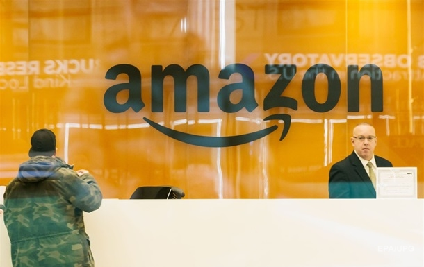

Dell готується до масштабного скорочення персоналу - Bloomber
Amazon звільнить понад 18 тисяч співробітників
Звільнення торкнуться понад 6600 робочих місць. Причиною такого рішення керівництва компанії є падіння продажу ПК.
Dell Technologies Inc. скоротить близько 6650 робочих місць через різке падіння попиту на персональні комп'ютери. Про це 6 лютого повідомило агентство Bloomberg .
Головний операційний директор компанії Джефф Кларк уточнив, що скорочення торкнеться 5% глобального штату компанії.
За його словами, Dell зіштовхується з невизначеними ринковими умовами та попередніх заходів економії, у тому числі призупинення найму нових співробітників, а також обмежень для витрат на відрядження, більше недостатньо
Компанія планує реорганізацію підрозділів та скорочення робочих місць, сподіваючись за рахунок цього підвищити продуктивність операцій.
Штат Dell після запланованих скорочень стане мінімальним за шість років, пише Bloomberg. Лише третина співробітників компанії перебуває у США.
Зазначається, що після буму комп'ютерів в епоху пандемії Dell та інші виробники зіткнулися з падінням попиту.
Аналітики вказали, що постачання персональних комп'ютерів різко скоротилося у четвертому кварталі 2022 року і найбільший спад серед великих компаній спостерігався у Dell - на 37% порівняно з тим самим періодом 2021 року. При цьому близько 55% свого прибутку техногігант отримує від ПК
Агентство нагадало, що останні місяці звільнення вдарили по технологічному сектору, включаючи багатьох конкурентів Dell.
P Inc. оголосила у листопаді про скорочення 6000 співробітників. Cisco Systems Inc. та International Business Machines Corp. заявили, що скоротять близько 4000 робітників.
Раніше Alphabet Inc, материнська компанія Google, заявила про скорочення близько 12 тисяч робочих місць, або 6% своїх співробітників.
Сюжети
- Потужна робота ППО. Провал російської атаки
- Вторгнення Росії в Україну. Онлайн
- Підсумки 16.02: Теми Женеви і підготовка удару РФ
- Зустріч у Женеві. Новий раунд переговорів з РФ
- ЗСУ сильніші за НАТО. Розгром на навчаннях в Естонії
До amazon
Компанія йде на безпрецедентне скорочення через невизначеність в економіці та у зв'язку з активним набором співробітників за останні два роки.
Американський концерн Amazon у рамках скорочення штатів звільнить понад 18 тисяч співробітників, повідомив у четвер, 5 січня, його генеральний директор Енді Джессі.
Рішення ухвалене в рамках планування на 2023 рік на тлі "невизначеності в економіці та у зв'язку з набором великої кількості співробітників останні два роки", пояснили в компанії. Кадрові скорочення в основному торкнуться відділів продажу та найму персоналу, повідомив Джессі..
Відхід 18 тисяч людей стане найбільшим одномоментним скороченням в історії Amazon, зазначає агентство AFP. Звільнення розпочалися ще у 2022 році, коли планувалося, що компанію залишать 10 тисяч людей, нагадує газета The Wall Street Journal.
Amazon скорочується після зростання пандемії
Amazon значно збільшив чисельність персоналу на тлі пандемії коронавірусу, коли різко зросли обсяги онлайн-торгівлі. У першому кварталі 2022 року в компанії працювало 1,62 млн осіб у всьому світі, проте до вересня їхня кількість скоротилася до 1,54 млн, пише AFP.
У третьому кварталі минулого року чистий прибуток Amazon упав на дев'ять відсотків порівняно з аналогічним періодом 2021 року. За підсумками останніх трьох місяців у 2022 році компанія очікує незначного за її мірками зростання - від 2 до 8% у річному обчисленні.
Скорочення в Amazon відповідають тенденції в інших технологічних компаніях, які визнали, що останніми роками вони дуже швидко розширювали штати, зазначає WSJ.
Материнська компанія Facebook Meta у листопаді оголосила, що звільнить 11 тисяч працівників. У жовтні новий глава Twitter Ілон Маск звільнив близько половини своїх 7500 співробітників. Наприкінці серпня Snapchat також скоротив штат на 20%, повідомляє видання.
Сюжети 2
- Потужна робота ППО. Провал російської атаки
- Вторгнення Росії в Україну. Онлайн
- Підсумки 16.02: Теми Женеви і підготовка удару РФ